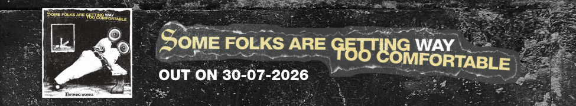
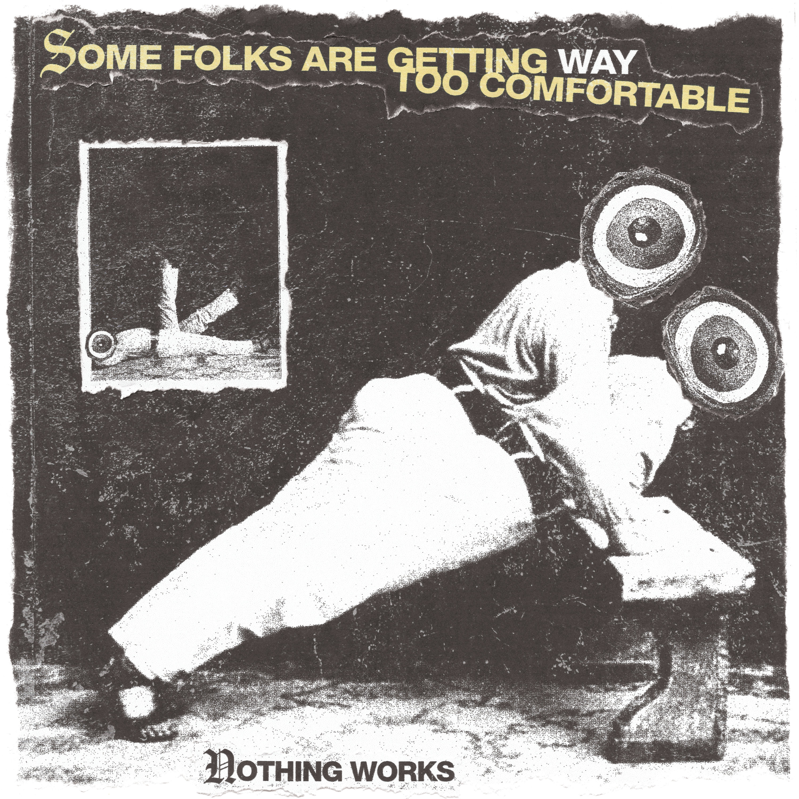

NOTHING WORKS
Berlin underground band since 2022.

Berlin underground band since 2022.
Nothing Works, formed in late 2022, has quickly established itself as one of the most exciting new bands to emerge from Berlin's underground. Drawing on '90s indie and alternative while embracing the urgency of modern post-hardcore, the band pairs emotionally charged songwriting with uncompromising political lyrics and an explosive live set.
Entirely composed of FLINTA* members, Nothing Works writes songs that confront injustice without sacrificing melody, vulnerability or community. Their mission is simple: to make people move, dance and stage dive while creating space for conversations about the political realities shaping everyday life.
Their debut EP, Bold Talk for a Burner Account, introduced the band's blend of emotionally charged post-hardcore and socially conscious songwriting. Since then, the band has joined UK independent label Best Life Records, which will release their second EP, Some Folks Are Getting Way Too Comfortable, on 30 July 2026, preceded by its first single on 27 July.
Across four new tracks, the band tackles gender-based violence, racial microaggressions, xenophobia in Germany and the climate crisis, asking a simple but uncomfortable question: what happens when society becomes comfortable with injustice?
Despite being a relatively young band, Nothing Works has already shared stages with international acts from Austria, Canada, Germany, Mexico, Peru and the United States, including CURB, Punitive Damage, Shoreline, Girls Go Ska, Dry Socket and Tomar Control.
In 2025, they joined Tomar Control on a 12-date European tour spanning five countries. The following year saw the band complete their first UK tour alongside Without Love, Funeral, Shooting Daggers and Cold Showers before returning to Goosegg Studios in Berlin to record their second EP.
Building on festival appearances in Berlin and Croatia over the previous two years, Nothing Works has continued to expand its presence on the European festival circuit throughout 2026. Following a packed Berlin Breakout! Festival showcase that reached capacity at Urban Spree, the band will also appear at Zdynia D.I.Y. Festival (Poland), Fuzzstock (Austria), Random Fest (Belgium) and Dunderfest (Sweden), with further festival appearances already confirmed for 2027.
FFO: Gouge Away, Drug Church, Scowl
Photo Credit for promo pic:
Michelle Olaya

OUT 30 JULY 2026 — 12” vinyl, cassette and digital via Best Life Records + My People Records
Berlin's Nothing Works return with four new songs that are more focused, more direct, and more urgent than ever. Some Folks Are Getting Way Too Comfortable confronts the violence and indifference that have become normalised in everyday life.
Across four tracks, the EP tackles gender-based violence, racial microaggressions, xenophobia, and the climate crisis, asking a simple but uncomfortable question: what happens when society becomes comfortable with injustice?
Drawing on ’90s indie and alternative while embracing the urgency of modern post-hardcore, Nothing Works balances abrasive guitars with memorable melodies and emotionally charged songwriting. The result is a record that moves between vulnerability and confrontation without ever losing its sense of purpose.
Recorded, mixed, and mastered by Elaine Williams at Goosegg Studios (Berlin, Germany) in June and July 2026, Some Folks Are Getting Way Too Comfortable captures a band growing into its own identity while remaining firmly rooted in DIY ethics. Hostel Kitchen Anthropology Experiment was produced by Oyèmi Hessou, who also contributed additional guitars.
The EP is available as a single-sided 12” vinyl with an exclusive etched illustration on Side B.
Vinyl pressing info:
• 100 black vinyl
• 100 transparent peach marble vinyl
• 100 yellow / black split vinyl
Cassette info:
• 50 yellow transparent cassettes (clear liner) — My People Records
Design and artwork by Eve Doran.
Tracklist:
1. Not Up for Grabs
2. Hostel Kitchen Anthropology Experiment
3. IKYHM, INSUA
4. The End Is Coming
Recorded, Mixed & Mastered by Elaine Williams at Goosegg Studios (Berlin, Germany)
Mastered for Vinyl Press by Elaine Williams at Goosegg Studios (Berlin, Germany)
Mastered for Streaming by Elaine Williams at Goosegg Studios (Berlin, Germany)
Additional Production & Additional Guitars by Oyèmi Hessou on “Hostel Kitchen Anthropology Experiment”

OUT NOW — 7” vinyl via Emancypunx Records + Refuse Records, cassette via My People Records
Nothing Works’ debut EP delivers four songs of urgency, honesty, and confrontation, raw emotion with sharp critique. “Bold Talk for a Burner Account” pulls straight from lived experience: racism in punk spaces, fatphobic trolling, gender erasure, and the burnout of carrying other people’s weight in DIY scenes. It’s personal and political, calling out exclusion while reclaiming space.
Blending ’90s indie/alternative with modern melodic and post-hardcore, their sound matches the anger and emotion in the lyrics, shifting between sarcasm and outright rage.
Vinyl pressing info:
• 100 solid red vinyl
• 200 black vinyl
• 15 test press / SOLD OUT
Orders via Refuse Records
Cassette info:
• 50 white welded
• 50 solid red welded
(Note: the cassettes will be managed by the band when touring resumes and are not available online. MPR supports only with promotion.)
Design work + Ilustration by the amazing Camila Leão.
Tracklist:
1. Look at the Shit You Just Spew
2. Take My Body Out of Your Mouth
3. I Am Not Your Bro
4. Matcha Latte
Recorded & Mixed by Imran Siddiqi at Studio Six (Brussels)
Mastered for Vinyl Press by Mariusz Dziurawiec (Warsaw)
Mastered for Streaming by Pete Grossmann at Bricktop Recording (Chicago)

From sweaty basements to classic and fancy small venues, Nothing Works channels raw energy into every set. This isn’t just a music performance — it’s protest, catharsis, and connection.
Whether opening for hardcore heavyweights or joining community-run festivals, they deliver intensity that leaves no one standing still.